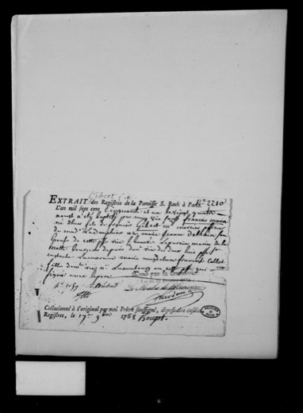

Sosa 19 · Côté Dubart
Marie Catherine Foucamprez
Née en 1771 à ParisMorte en 1827 à Paris
Arrière-arrière-grand-mère de René, côté paternel.
Récit
Marie Catherine Foucamprez naît à Paris et est baptisée le même jour, le 3 mars 1771, à Saint-Sulpice : l'extrait la dit fille d'Adrien Foucamprez, présent, et de Catherine Colin, son épouse, qui demeurent rue du Sépulcre, l'actuelle rue du Dragon. Son parrain, François Étienne Alexis Foucamprez, porte le nom de son père (un frère ou un parent est probable, le lien n'est pas dit) ; sa marraine est Marie Madeleine Dettous [?]. On ne connaît d'elle aucun frère ni sœur.
Elle épouse Marin François Gibert, fils de François Gibert, maître mercier, et de Marie Jeanne Dolhain, le 18 frimaire an II (8 décembre 1793), « à la ci-devant municipalité de Paris », d'après l'acte de naissance de leur fils ; l'acte de mariage n'a pas été retrouvé. Une table des mariages de la paroisse Notre-Dame-de-Bonne-Nouvelle porte, au 17 novembre 1804, un mariage religieux François Marin Gibert × Marie Catherine « Foucamprer » : probablement le même couple, onze ans plus tard ; l'acte n'est pas accessible et aucun acte civil de 1804 n'a été retrouvé. Les mariages étaient civils depuis 1792, la cérémonie religieuse redevenant possible après le Concordat.
Le 1er fructidor an V (18 août 1797), à 5 h du matin, elle accouche de Camille Melchior dans la maison du 31 rue du Faubourg-Poissonnière ; l'acte la dit « épouse » de François Marin Gibert, « employé à la Poste ». Une des deux témoins, Charlotte Aimée Lique [?], rentière, habite la même maison. Elle est aussi la mère de Marie Octavie, future épouse de Louis Charles Ambroise Dubart.
Elle meurt à Paris le 14 septembre 1827, à 5 h du matin, âgée de 56 ans, dans la maison du 31 boulevard Bonne-Nouvelle où vit aussi son fils Camille, médecin ; son mari, 76 ans, est vivant. Le décès est déclaré par son fils et par Joseph Pierre Bernard Chauvet, négociant, dont le lien n'est pas dit. Un an plus tard, Camille épouse Marie Françoise Thaïs Dubart. L'acte ne nomme pas ses parents ; son métier est inconnu.
Hypothèse seulement : elle et son mari auraient été « têtes » d'actions de la Caisse Lafarge, tontine viagère de 1791, ce qui expliquerait que la Caisse ait gardé son extrait de baptême et son extrait de décès ; rien ne le prouve.
Contexte : recherches/generation-5/gibert-bosse/contexte/notes.md ; recherches/generation-5/gibert-bosse/contexte/notes-2.md.
Récit rédigé le 9 novembre 2026 à partir de la base, qui fait foi. Chaque marque ouvre la preuve du passage.
Famille
Autres liens dits par les actes
- François Étienne Alexis FOUCAMPREZ — parrain (mentionné)
- Marie Madeleine DETTOUS [?] — marraine (mentionné)
Sa vie dans le temps
- Règne de Louis XV
- Marie Catherine Foucamprez, née le 3 mars 1771, est baptisée le même jour à Saint-Sulpice (Paris) — Paris vérifié
- Marie Catherine Foucamprez est fille d'Adrien Foucamprez et de Catherine Colin, son épouse — Paris vérifié
- Au baptême de Marie Catherine Foucamprez (1771), le parrain est François Étienne Alexis Foucamprez, la marraine Marie Madeleine Dettous [?], épouse du parrain ; le père est présent — Paris vérifié
- Naissance (Paris) — selon l'arbre transmis — Paris non vérifié
- Louis XVI et la Révolution
- La provenance Caisse Lafarge des extraits de baptême de François Marin Gibert (1751) et de Marie Catherine Foucamprez (1771) et du décès de celle-ci (1827) rend cohérente l'hypothèse A0566 (ils auraient été « têtes » de la Caisse) ; elle ne la prouve pas — Paris non vérifié
- S'ils avaient été têtes à la souscription (1791-1793), François Marin (né en 1751) et Marie Catherine (née en 1771) relèveraient de la classe « Jeunes » et Geneviève (baptisée en 1744) de la classe « Vieillards » — Paris non vérifié
- Première République
- Marin François Gibert et Marie Catherine Foucamprez se sont mariés le 18 frimaire an II (8 décembre 1793) « à la ci-devant municipalité de Paris » — Paris partiellement vérifié
- Camille Melchior Gibert, né à Paris (3e) le 1er fructidor an V (18/08/1797), est fils de François Marin Gibert, pensionnaire de l'État, et de Marie Catherine Foucamprez, décédée à Paris (5e) le 14/09/1827 — Paris vérifié
- Camille Melchior est fils de François Marin Gibert, « employé à la Poste », et de Marie Catherine Foucamprez, son épouse — Paris vérifié
- Premier Empire
- François Marin Gibert et Marie Catherine « Foucamprer » ont fait célébrer leur mariage religieux à la paroisse Notre-Dame-de-Bonne-Nouvelle le 17 novembre 1804 (inscription à la table des mariages paroissiaux) — Paris partiellement vérifié
- Restauration
- Octavie avait 19 ou 20 ans à la mort de sa mère (14/09/1827) et 21 ou 22 ans à celle de son père (05/10/1829), soit environ trois mois et demi après la naissance de son fils Charles (24/06/1829) — Paris non vérifié
- Marie Catherine Foucamprez, épouse de François Marin Gibert (76 ans), meurt le 14 septembre 1827 à cinq heures du matin en la maison n° 31 boulevard Bonne-Nouvelle (Paris, ancien 5e, quartier Bonne-Nouvelle), âgée de 56 ans, née à Paris — Paris vérifié
- Le décès de Marie Catherine Foucamprez (1827) est déclaré par son fils Camille Melchior Gibert, 30 ans, médecin, demeurant 31 boulevard Bonne-Nouvelle, et par Joseph Pierre Bernard Chauvet, 38 ans, négociant, demeurant rue Poissonnière n° 21 — Paris vérifié
- Second Empire
- Marie Octavie Gibert est fille de Marin François Gibert et de Catherine Foucampré (Foucamprez) : elle est donc sœur du Dr Camille Melchior Gibert (AG19) — Paris vérifié
Lieux
- Paris 17 mentions
Documents (16)



Autres sources citées
- Table des mariages célébrés à la paroisse Notre-Dame-de-Bonne-Nouvelle (Paris), 1803-1820 (libellé Geneanet « Tables décennales (Mariages) ») : GIBERT François Marin × FOUCAMPRER Marie Catherine, 17/11/1804 Registre paroissial · Archives de Paris (numérisation Geneanet) · D6J 1209
- Actes de l'état civil reconstitué, mariages du 07/11/1804 au 19/11/1804 Acte d'état civil · Archives de Paris · 5Mi1 2014
- O. Cottarel (dir. O. Krakovitch), « Tontines d'épargne : administration des tontines, caisse d'épargne et de bienfaisance (Caisse Lafarge), Caisse des employés et artisans », répertoire numérique F/22/685-1037, 1992 Inventaire d'archives · Archives nationales (Pierrefitte-sur-Seine) · F/22/*685-1037
- Actes de l'état civil reconstitué, mariages déclassés du 11/04/1778 au 06/11/1833, liasse lue en entier sur planche Acte d'état civil · Archives de Paris · 5Mi1 2339
- Actes de l'état civil reconstitué, mariages du 02/12/1793 au 09/12/1793 (dont le 18 frimaire an II), liasse lue en entier sur planche des hauts de page Acte d'état civil · Archives de Paris · 5Mi1 2008
- Fichier de l'état civil reconstitué, mariages, liasse « Foubert (1859) – Foucard (1851) », fiches 1-50 lues Acte d'état civil · Archives de Paris · V3E/M 388
Ce qu'on ignore
Parents et état civil de Marie Catherine Foucamprez
infructueuse · 2026-10-29 — non établi Pistes : décès 1827 (5e/6e anc.), mariage ~1793-94, contrat notarié · R0031
Archives de la Caisse Lafarge : dossiers des têtes Gibert et Foucamprez, souscripteur
en cours · 2026-11-03 — Non tentée : trois pièces de reconstitution déposées par la Caisse / Compagnie Lafarge (hypothèse A0566) Pistes : Identifier le dépôt des archives de la Caisse Lafarge (Archives de Paris ? Archives nationales ?) et chercher les registres de souscription et d'extinction au nom de Gibert et de Foucamprez ; ouvrage historique sur la Caisse pour le fonctionnement · R0202
Continuer l'exploration
Dossier complet : toutes les informations et leurs sources
Sosa 19.
Biographie
Récit rédigé le 2026-11-09 à partir de la base, qui fait foi. Les crochets renvoient aux assertions (onglet Toutes les informations).
Marie Catherine Foucamprez naît à Paris et est baptisée le même jour, le 3 mars 1771, à Saint-Sulpice : l'extrait la dit fille d'Adrien Foucamprez, présent, et de Catherine Colin, son épouse, qui demeurent rue du Sépulcre, l'actuelle rue du Dragon. Son parrain, François Étienne Alexis Foucamprez, porte le nom de son père (un frère ou un parent est probable, le lien n'est pas dit) ; sa marraine est Marie Madeleine Dettous [?]. On ne connaît d'elle aucun frère ni sœur. [A0555, A0556, A0557, A0588, A0558]
Elle épouse Marin François Gibert, fils de François Gibert, maître mercier, et de Marie Jeanne Dolhain, le 18 frimaire an II (8 décembre 1793), « à la ci-devant municipalité de Paris », d'après l'acte de naissance de leur fils ; l'acte de mariage n'a pas été retrouvé. Une table des mariages de la paroisse Notre-Dame-de-Bonne-Nouvelle porte, au 17 novembre 1804, un mariage religieux François Marin Gibert × Marie Catherine « Foucamprer » : probablement le même couple, onze ans plus tard ; l'acte n'est pas accessible et aucun acte civil de 1804 n'a été retrouvé. Les mariages étaient civils depuis 1792, la cérémonie religieuse redevenant possible après le Concordat. [A0513, A0563, A0567, A0684, A0685, A0686, A0683]
Le 1er fructidor an V (18 août 1797), à 5 h du matin, elle accouche de Camille Melchior dans la maison du 31 rue du Faubourg-Poissonnière ; l'acte la dit « épouse » de François Marin Gibert, « employé à la Poste ». Une des deux témoins, Charlotte Aimée Lique [?], rentière, habite la même maison. Elle est aussi la mère de Marie Octavie, future épouse de Louis Charles Ambroise Dubart. [A0511, A0512, A0514, A0237]
Elle meurt à Paris le 14 septembre 1827, à 5 h du matin, âgée de 56 ans, dans la maison du 31 boulevard Bonne-Nouvelle où vit aussi son fils Camille, médecin ; son mari, 76 ans, est vivant. Le décès est déclaré par son fils et par Joseph Pierre Bernard Chauvet, négociant, dont le lien n'est pas dit. Un an plus tard, Camille épouse Marie Françoise Thaïs Dubart. L'acte ne nomme pas ses parents ; son métier est inconnu. [A0559, A0560, A0561, A0231]
Hypothèse seulement : elle et son mari auraient été « têtes » d'actions de la Caisse Lafarge, tontine viagère de 1791, ce qui expliquerait que la Caisse ait gardé son extrait de baptême et son extrait de décès ; rien ne le prouve. [A0566, A0585, A0586]
Contexte : recherches/generation-5/gibert-bosse/contexte/notes.md ; recherches/generation-5/gibert-bosse/contexte/notes-2.md.
Faits clés
- Naissance : 03/03/1771, Paris — non vérifié (arbre familial) [AR0102]
- Baptême : 03/03/1771, Paris, paroisse Saint-Sulpice — vérifié [A0555]
- Parents : Adrien FOUCAMPREZ (PN0065) et Catherine COLIN (PN0066) — vérifié [A0556]
- Mariage : avec Marin François GIBERT (P8800) — 08/12/1793, Paris, ci-devant municipalité — partiellement vérifié [A0513]
- Décès : 14/09/1827, Paris (ancien 5e), 31 boulevard Bonne-Nouvelle — vérifié [A0559]
Famille
Liens tirés des assertions de la base ; le statut de chaque lien est celui des assertions citées. Les proches plus éloignés sont calculés à partir de ces liens directs.
Parents
Conjoint(s)
- Marin François GIBERT (P8800) — mariage 1793-12-08 [A0513 partiellement vérifié, A0559 vérifié, A0567 recherche infructueuse, A0568 recherche infructueuse, A0682 partiellement vérifié, A0685 partiellement vérifié, A0686 recherche infructueuse]
Enfants
- Marie Octavie GIBERT (P7411) [A0237 vérifié, A0500 non vérifié, AR0190 non vérifié]
- Camille Melchior GIBERT (P8808) [A0231 vérifié, A0512 vérifié, A0560 vérifié, AR0189 non vérifié]
Frères et sœurs
- aucun dans la base.
Proches et alliés (calculés)
Beaux-parents
- François GIBERT (PR0036) — parent de Marin François GIBERT (P8800) [A0513 partiellement vérifié, A0559 vérifié, A0563 vérifié, A0567 recherche infructueuse, A0568 recherche infructueuse, A0682 partiellement vérifié, A0685 partiellement vérifié, A0686 recherche infructueuse, AR0212 non vérifié]
- Marie DOLHAIN (PR0037) — parent de Marin François GIBERT (P8800) [A0513 partiellement vérifié, A0559 vérifié, A0563 vérifié, A0567 recherche infructueuse, A0568 recherche infructueuse, A0682 partiellement vérifié, A0685 partiellement vérifié, A0686 recherche infructueuse, AR0212 non vérifié]
Beaux-frères et belles-sœurs
- Geneviève GIBERT (PN0070) — frère ou sœur de Marin François GIBERT (P8800) [A0513 partiellement vérifié, A0559 vérifié, A0563 vérifié, A0567 recherche infructueuse, A0568 recherche infructueuse, A0571 vérifié, A0572 vérifié, A0682 partiellement vérifié, A0685 partiellement vérifié, A0686 recherche infructueuse, AR0212 non vérifié]
- Jean Baptiste GIBERT (PN0073) — frère ou sœur de Marin François GIBERT (P8800) [A0513 partiellement vérifié, A0559 vérifié, A0563 vérifié, A0567 recherche infructueuse, A0568 recherche infructueuse, A0595 non résolu, A0616 partiellement vérifié, A0682 partiellement vérifié, A0685 partiellement vérifié, A0686 recherche infructueuse, AR0212 non vérifié]
- Paul César GIBERT (PN0074) — frère ou sœur de Marin François GIBERT (P8800) [A0513 partiellement vérifié, A0559 vérifié, A0563 vérifié, A0567 recherche infructueuse, A0568 recherche infructueuse, A0614 partiellement vérifié, A0667 partiellement vérifié, A0682 partiellement vérifié, A0685 partiellement vérifié, A0686 recherche infructueuse, AR0212 non vérifié]
- Charles César GIBERT (PN0075) — frère ou sœur de Marin François GIBERT (P8800) [A0513 partiellement vérifié, A0559 vérifié, A0563 vérifié, A0567 recherche infructueuse, A0568 recherche infructueuse, A0615 partiellement vérifié, A0682 partiellement vérifié, A0685 partiellement vérifié, A0686 recherche infructueuse, AR0212 non vérifié]
Gendres et belles-filles
- Louis Charles Ambroise DUBART (P5761) — conjoint de Marie Octavie GIBERT (P7411) [A0236 vérifié, A0237 vérifié, A0500 non vérifié, A0540 vérifié, A0542 recherche infructueuse, A0546 vérifié, A0550 recherche infructueuse, A0552 recherche infructueuse, AR0190 non vérifié]
- Marie Françoise Thais DUBART (P8810) — conjoint de Camille Melchior GIBERT (P8808) [A0230 vérifié, A0231 vérifié, A0248 vérifié, A0251 vérifié, A0512 vérifié, A0560 vérifié, A0795 non résolu, AR0189 non vérifié, AR0191 non vérifié]
Petits-enfants
- Edmond DUBART (P5232) — par Marie Octavie GIBERT (P7411) [A0237 vérifié, A0257 vérifié, A0258 vérifié, A0384 vérifié, A0500 non vérifié, AR0181 non vérifié, AR0190 non vérifié]
- Charles Alfred DUBART (P5762) — par Marie Octavie GIBERT (P7411) [A0237 vérifié, A0239 vérifié, A0256 partiellement vérifié, A0376 vérifié, A0500 non vérifié, AR0180 non vérifié, AR0190 non vérifié]
Autres parentés dites par les actes
- François Étienne Alexis FOUCAMPREZ (PN0067) — parrain (mentionné) [A0558 vérifié]
- Marie Madeleine DETTOUS [?] (PN0068) — marraine (mentionné) [A0558 vérifié]
Autres personnes citées dans les mêmes actes (sans parenté établie)
Toutes les informations
-
[A0555] vérifié · transcription · confiance forte — Marie Catherine Foucamprez, née le 3 mars 1771, est baptisée le même jour à Saint-Sulpice (Paris)
- Limite : extrait (pas le registre, détruit en 1871) ; identification avec l'épouse Gibert par recoupement : mêmes nom et prénoms, 56 ans au décès du 14/09/1827, « née à Paris », pièces de naissance et de décès déposées par la même Caisse Lafarge, seule Marie Catherine Foucamprez du fichier
- Sources : S0282, S0281
- [A0556] vérifié · transcription · confiance forte — Marie Catherine Foucamprez est fille d'Adrien Foucamprez et de Catherine Colin, son épouse
-
[A0558] vérifié · transcription · confiance moyenne — Au baptême de Marie Catherine Foucamprez (1771), le parrain est François Étienne Alexis Foucamprez, la marraine Marie Madeleine Dettous [?], épouse du parrain ; le père est présent
- Limite : lien du parrain avec Adrien non dit (même nom : frère ou parent probable, non établi)
- Possibilités : marraine Destous ou Dettons
- Sources : S0282
-
[A0585] non vérifié · inférence · confiance faible — La provenance Caisse Lafarge des extraits de baptême de François Marin Gibert (1751) et de Marie Catherine Foucamprez (1771) et du décès de celle-ci (1827) rend cohérente l'hypothèse A0566 (ils auraient été « têtes » de la Caisse) ; elle ne la prouve pas
- Limite : aucun registre F/22 consulté ; le motif de la délivrance de l'extrait de 1768 (23 ans avant la Caisse) reste inconnu
- Possibilités : la Caisse a pu détenir ces pièces comme actionnaire héritier ou souscripteur
- Sources : S0302
- [A0586] non vérifié · inférence · confiance faible — S'ils avaient été têtes à la souscription (1791-1793), François Marin (né en 1751) et Marie Catherine (née en 1771) relèveraient de la classe « Jeunes » et Geneviève (baptisée en 1744) de la classe « Vieillards »
-
[A0513] partiellement vérifié · transcription · confiance moyenne — Marin François Gibert et Marie Catherine Foucamprez se sont mariés le 18 frimaire an II (8 décembre 1793) « à la ci-devant municipalité de Paris »
- Limite : Acte de mariage non lu ; la section de Paris n'est pas nommée
- Sources : S0235
- [A0567] recherche infructueuse · transcription · confiance moyenne — Le mariage de François Marin Gibert et de Marie Catherine Foucamprez (18 frimaire an II) n'est pas dans le fichier des mariages reconstitués : aucune fiche Foucamprez (liasse V3E/M 388) ni aucune fiche Gibert de 1793 (liasse V3E/M 431)
-
[A0568] recherche infructueuse · transcription · confiance moyenne — Aucun acte de mariage Gibert × Foucamprez n'a été trouvé parmi les actes reconstitués du 18 frimaire an II (8/12/1793) : liasse 5Mi1 2008 (mariages du 02 au 09/12/1793) et liasse des mariages déclassés 5Mi1 2339 ne contiennent ni Gibert ni Foucamprez
- Limite : la reconstitution n'est pas exhaustive ; absence dans ces liasses ne prouve pas que le mariage n'a pas eu lieu (A0567 : seule trace, la mention de l'acte de naissance de Camille en 1797) ; 5Mi1 2339 lue seulement par intercalaires d'années
- Possibilités : acte non reconstitué ; acte classé dans une autre liasse (autre date ou mairie) ; date de mariage différente de celle mentionnée
- Sources : S0288, S0289
-
[A0231] vérifié · transcription · confiance forte — Camille Melchior Gibert, né à Paris (3e) le 1er fructidor an V (18/08/1797), est fils de François Marin Gibert, pensionnaire de l'État, et de Marie Catherine Foucamprez, décédée à Paris (5e) le 14/09/1827
- Limite : naissance citée, acte de naissance non lu ; tranche la divergence août/septembre 1797 en faveur du 18 août
- Sources : S0144
-
[A0512] vérifié · fait attesté · confiance forte — Camille Melchior est fils de François Marin Gibert, « employé à la Poste », et de Marie Catherine Foucamprez, son épouse
- Limite : La profession date de 1797 (le père est dit « pensionnaire de l'État » à son décès en 1829)
- Sources : S0235
- [A0686] recherche infructueuse · transcription · confiance faible — Aucun acte civil de mariage Gibert × Foucamprez / Foucamprer n'a été vu parmi les chemises lues de la liasse reconstituée 5Mi1 2014 (mariages du 07/11/1804 au 19/11/1804, 47 images)
-
[A0682] partiellement vérifié · transcription · confiance moyenne — Un mariage François Marin Gibert × Marie Catherine « Foucamprer » est inscrit à la table décennale des mariages de Paris, Notre-Dame-de-Bonne-Nouvelle (1803-1820), au 17 novembre 1804 (26 brumaire an XIII)
- Remplacée par [A0685]
- Limite : Témoins, âges, parents, professions et éventuelle légitimation d'enfants non connus (acte non lu). [Corrigé le 09/11/2026 : la table D6J 1209 est une table de catholicité, donc le mariage inscrit est religieux (A0684, A0685).] Postérieur de 7 ans à la naissance de Camille Melchior (1797) et de 11 ans au « mariage du 18 frimaire an II » (A0513, jamais retrouvé : A0567, A0568) : l'acte dira s'il s'agit d'un premier mariage, d'un remariage ou d'une régularisation.
- Sources : S0363
-
[A0683] non vérifié · inférence · confiance moyenne — Le couple François Marin Gibert × Marie Catherine Foucamprer de la table de 1804 est le couple François Marin Gibert (P8800) × Marie Catherine Foucamprez (P8802) de la base
- Limite : Aucune filiation ni âge dans la table ; un autre couple de mêmes prénoms n'est pas exclu.
- Possibilités : Homonymes.
- Sources : S0363
-
[A0685] partiellement vérifié · transcription · confiance moyenne — François Marin Gibert et Marie Catherine « Foucamprer » ont fait célébrer leur mariage religieux à la paroisse Notre-Dame-de-Bonne-Nouvelle le 17 novembre 1804 (inscription à la table des mariages paroissiaux)
- Limite : Témoins, âges, parents, professions, légitimation éventuelle non lus ; identification du couple : A0683 (non vérifiée) ; date civile éventuelle inconnue
- Possibilités : (a) bénédiction religieuse du mariage civil du 18 frimaire an II (A0513, acte jamais retrouvé : A0567, A0568) ; (b) mariage civil et religieux de 1804 (premier mariage ou remariage) ; (c) date d'inscription différente de celle de la cérémonie
- Sources : S0363, S0366
- [A0559] vérifié · transcription · confiance forte — Marie Catherine Foucamprez, épouse de François Marin Gibert (76 ans), meurt le 14 septembre 1827 à cinq heures du matin en la maison n° 31 boulevard Bonne-Nouvelle (Paris, ancien 5e, quartier Bonne-Nouvelle), âgée de 56 ans, née à Paris
-
[A0560] vérifié · transcription · confiance forte — Le décès de Marie Catherine Foucamprez (1827) est déclaré par son fils Camille Melchior Gibert, 30 ans, médecin, demeurant 31 boulevard Bonne-Nouvelle, et par Joseph Pierre Bernard Chauvet, 38 ans, négociant, demeurant rue Poissonnière n° 21
- Limite : lien de Chauvet avec la famille non dit (voisin, ami, allié ?)
- Sources : S0284
- [A0500] non vérifié · inférence · confiance moyenne — Octavie avait 19 ou 20 ans à la mort de sa mère (14/09/1827) et 21 ou 22 ans à celle de son père (05/10/1829), soit environ trois mois et demi après la naissance de son fils Charles (24/06/1829)
-
[A0237] vérifié · transcription · confiance forte — Marie Octavie Gibert est fille de Marin François Gibert et de Catherine Foucampré (Foucamprez) : elle est donc sœur du Dr Camille Melchior Gibert (AG19)
- Limite : déclaration tardive des enfants, mais concordante avec l'acte de 1828
- Sources : S0145
- [A0566] non vérifié · hypothèse · confiance moyenne — Hypothèse : François Marin Gibert et Marie Catherine Foucamprez étaient tous deux « têtes » d'actions de la Caisse Lafarge (tontine viagère créée en 1791), ce qui expliquerait que la Caisse ait conservé leurs extraits de baptême et l'extrait de décès de l'épouse
-
[AR0102] non vérifié · rapporté par un tiers · confiance faible — naissance ; 1771-03-03 ; Paris
- Sources : S-ARBRE
-
[AR0103] non vérifié · rapporté par un tiers · confiance faible — deces ; 1827-09-14 ; Paris — note de l'arbre : décédée en son domicile 31 boulevard Bonne Nouvelle à Paris - aucune info sur la table de succession (5è/6è arrondt)
- Sources : S-ARBRE
-
[AR0189] non vérifié · rapporté par un tiers · confiance faible — filiation : Camille Melchior GIBERT (P8808) enfant de Marin François GIBERT (P8800) et Marie Catherine FOUCAMPREZ (P8802)
- Sources : S-ARBRE
-
[AR0190] non vérifié · rapporté par un tiers · confiance faible — filiation : Marie Octavie GIBERT (P7411) enfant de Marin François GIBERT (P8800) et Marie Catherine FOUCAMPREZ (P8802)
- Sources : S-ARBRE
Recherches menées
- [R0031] Parents et état civil de Marie Catherine Foucamprez — infructueuse : non établi Pistes : décès 1827 (5e/6e anc.), mariage ~1793-94, contrat notarié
- [R0198] Naissance et parents de Marie Catherine Foucamprez (fichier et actes reconstitués) — trouve : Baptême du 3/03/1771 à Saint-Sulpice : fille d'Adrien Foucamprez et de Catherine Colin, rue du Sépulcre ; parrain François Étienne Alexis Foucamprez Pistes : Mariage Foucamprez × Colin (avant 1771 ; fichier des mariages : aucune fiche Foucamprez) ; décès d'Adrien et de Catherine Colin (fichier des décès V3E/D : Colin) ; frères et sœurs (aucune autre fiche Foucamprez de naissance) ; profession d'Adrien (almanachs, Minutier central)
- [R0199] Acte de décès de Marie Catherine Foucamprez (14/09/1827) — trouve : Décès au 31 boulevard Bonne-Nouvelle, 56 ans ; déclarants : son fils Camille Melchior, médecin, et le négociant J. P. B. Chauvet Pistes : Qui est Joseph Pierre Bernard Chauvet (rue Poissonnière 21) ; table des successions du 5e bureau pour 1827 (l'arbre dit : aucune info)
- [R0202] Archives de la Caisse Lafarge : dossiers des têtes Gibert et Foucamprez, souscripteur — en_cours : Non tentée : trois pièces de reconstitution déposées par la Caisse / Compagnie Lafarge (hypothèse A0566) Pistes : Identifier le dépôt des archives de la Caisse Lafarge (Archives de Paris ? Archives nationales ?) et chercher les registres de souscription et d'extinction au nom de Gibert et de Foucamprez ; ouvrage historique sur la Caisse pour le fonctionnement
Sources citées
- S-ARBRE — Arbre Heredis « Généalogie DUBART René », export GEDCOM (consultee)
- S0144 — Mariage Gibert × Dubart, Paris ancien 3e, 4/10/1828 : extrait du registre, état civil reconstitué (consultee, 5Mi1 2054, vues 33-36)
- S0145 — Décès de Marie Octavie Gibert, Paris 9e, 10/08/1860 (consultee, V4E 964, vues 8)
- S0156 — Naissance de Charles Dubart, Paris ancien 5e, 24/06/1829 : acte rétabli (loi du 12/02/1872) d'après le mariage de 1860 (consultee, 5Mi1 336, vues 42)
- S0235 — Acte de naissance reconstitué de Camille Melchior Gibert, 2 fructidor an V (extrait délivré le 19/05/1808, pièces de reconstitution) (consultee, 5Mi1 100 (naissances 17-20/08/1797), vues 16, 17, 18)
- S0266 — Fichier de l'état civil reconstitué, mariages, liasse « Gibert » (tranches 1752-1835 en entier et 1835-1847, fiches 0-17) (consultee, V3E/M 431, vues 0-50 (tranche 1) ; 0-17 (tranche 2))
- S0281 — Fichier de l'état civil reconstitué, naissances, liasse « Foubert (1858) – Foucard (1810) » : fiche Foucamprez Marie Catherine, 1771, Saint-Sulpice (consultee, V3E/N 910, vues 32 (planche 0-50))
- S0282 — Extrait de baptême de Marie Catherine Foucamprez, paroisse Saint-Sulpice, 3/03/1771 (pièce de reconstitution déposée par la Caisse Lafarge) (consultee, 5Mi1 44 (naissances 01-05/03/1771), vues 26, 27)
- S0283 — Fichier de l'état civil reconstitué, décès, liasse « Foubert (1849) – Foucar (1859) » : fiche Foucamprez Marie Catherine, 14/09/1827, 5e ancien (consultee, V3E/D 574, vues 47 (planche 0-50))
- S0284 — Extrait de l'acte de décès de Marie Catherine Foucamprez, Paris ancien 5e, 14/09/1827 (délivré le 25/09/1827 ; pièce de reconstitution déposée par la Caisse Lafarge) (consultee, 5Mi1 1221 (décès 13-15/09/1827), vues 28, 29, 30)
- S0286 — Extrait de baptême de François Marin Gibert, paroisse Saint-Roch, 24/08/1751 (délivré le 17/11/1768 ; pièce de reconstitution déposée par la Compagnie Lafarge) (consultee, 5Mi1 25 (naissances 19-27/08/1751), vues 28, 29)
- S0287 — Fichier de l'état civil reconstitué, mariages, liasse « Foubert (1859) – Foucard (1851) », fiches 1-50 lues (consultee, V3E/M 388, vues 1-50)
- S0288 — Actes de l'état civil reconstitué, mariages du 02/12/1793 au 09/12/1793 (dont le 18 frimaire an II), liasse lue en entier sur planche des hauts de page (consultee, 5Mi1 2008, vues 0-49)
- S0289 — Actes de l'état civil reconstitué, mariages déclassés du 11/04/1778 au 06/11/1833, liasse lue en entier sur planche (consultee, 5Mi1 2339, vues 0-50)
- S0302 — O. Cottarel (dir. O. Krakovitch), « Tontines d'épargne : administration des tontines, caisse d'épargne et de bienfaisance (Caisse Lafarge), Caisse des employés et artisans », répertoire numérique F/22/685-1037, 1992 (consultee, F/22/*685-1037)
- S0363 — Table des mariages célébrés à la paroisse Notre-Dame-de-Bonne-Nouvelle (Paris), 1803-1820 (libellé Geneanet « Tables décennales (Mariages) ») : GIBERT François Marin × FOUCAMPRER Marie Catherine, 17/11/1804 (consultee, D6J 1209, vues 10/118)
- S0366 — Actes de l'état civil reconstitué, mariages du 07/11/1804 au 19/11/1804 (consultee, 5Mi1 2014, vues 0-46)